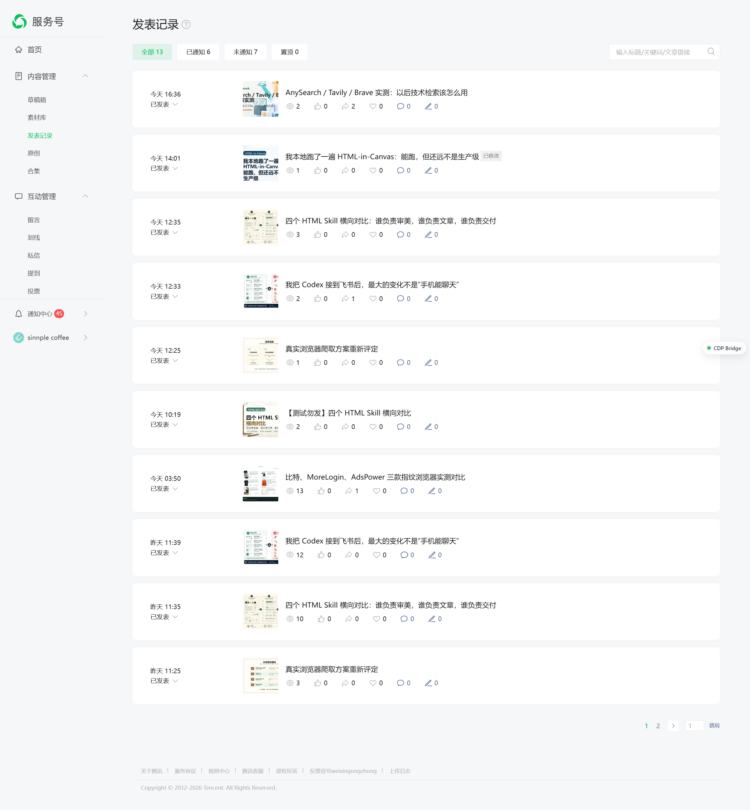

我实测了 5 种公众号自动化方式，真正稳定的是哪一种？
先说结论：公众号发布、验收、查发表记录、截图这类任务，最稳的是 Playwright connectOverCDP 接已登录的固定 Chrome。
这次我没有做“功能清单式测评”，而是按真实公众号工作流跑了一遍：后台登录态能不能复用，发表记录能不能读，公开文章页能不能打开，图片和正文能不能检查，最后能不能沉淀成长期脚本。
结论很清楚：工具不是越多越好，关键是分工要准。一个工具放错位置，后面就会变成反复扫码、反复猜页面状态、反复修临时脚本。
这张图先看排序，不看细节：主流程、快速确认、当前页接管、底层排障、公开页探索，五类工具的位置不能混用。

工具排序图：Playwright connectOverCDP 做主流程，OpenCLI 和 CDP Bridge 做辅助，raw CDP 做排障，playwright-cli 做公开页探索。
一、先别谈工具，先谈登录态
公众号后台真正麻烦的不是“能不能打开网页”，而是“能不能稳定复用已经登录的浏览器”。新开一个普通 Chrome，脚本看起来很干净，但进入后台、草稿、发表记录时，很容易被登录、扫码、权限、页面状态打断。
所以这轮实测最后收敛成一条固定路径：
这条路径的好处是少猜：浏览器是谁、端口是谁、页面从哪里来、结果怎么验收，都固定下来。
判断工具好不好，不看它能不能点一次页面，而看它能不能稳定复用同一个登录态，并把结果变成可复用脚本。
二、五个工具，各放各的位置
这次最大的收获不是“某个工具赢了”，而是每个工具应该被放到正确位置。放错了，就会越自动化越乱。
Playwright connectOverCDP
最适合接已登录的固定 Chrome。它能读后台、开公开页、截图、做页面统计，也最适合写成长期脚本。只要任务依赖公众号登录态，它就是第一选择。
OpenCLI
适合 open、state、临时确认页面和标题。它很顺手，但不适合承担复杂批处理主流程。
CDP Bridge MCP / TMWebDriver
桥服务在线时，可以接管当前真实标签页、执行 JS、临时截图。但它不是 Chrome CDP 本身，必须单独确认 18765/18766 监听。
raw CDP
适合查端口、Runtime.evaluate、Page.captureScreenshot。它最直接，但写日常流程会变得繁琐。
playwright-cli
能截公开文章页，也适合探索脚本思路。但它默认新开浏览器，不适合公众号后台这种依赖固定登录态的流程。
三、发布成功不等于读者看到正常
后台草稿看起来正常，不代表公开页正常。公众号真正要验收的，是读者打开的那条公开链接。
所以发表后必须进入“发表记录”，从那里拿公开链接，再检查标题、正文、图片、表格、手机宽度和是否乱码。

发表记录截图：公开链接必须从这里拿，不能只看后台保存成功。
这一步最容易被省掉，但不能省。后台保存成功，只能说明编辑器收到了内容；公开页正常，才说明读者能正常阅读。
所以验收不能只看后台。必须从发表记录拿公开链接，再分别看桌面和手机宽度下的标题、正文、图片和表格。
四、主流程为什么最后胜出
下面这张截图对应的是主流程：Playwright connectOverCDP 接已登录 Chrome，再打开公开页做验收。它不是最轻的工具，但它最适合成为长期方案。

Playwright connectOverCDP：能接固定 Chrome、打开公开页、统计图片和正文，并保存验收截图。
它胜出的原因不是“功能最多”，而是链路完整：同一个登录态，同一个浏览器，同一套截图和页面检查方式，最后还能沉淀成脚本。
以后做公众号浏览器任务，先问一句：这个动作是否依赖已登录后台？只要答案是“是”，主流程就不要离开已登录 Chrome + connectOverCDP。
五、最后留下这套复用清单
这次测完后，我会把公众号浏览器任务固定成下面这套清单：
这套结论的价值，不在于把工具讲全，而在于把流程定死：主流程稳定，辅助工具轻量，最终验收必须看公开页。